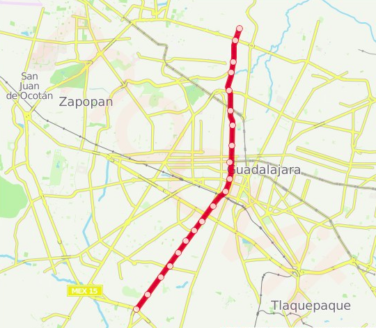

Tren Ligero: Línea 1
Estado de línea:
Horarios y paradas
La línea TL-1 de tren tiene 20 paradas desde Periférico Sur hasta Auditorio. Horarios del tren TL-1: comienza a operar a las 5:00 y finaliza a las 23:00. Los días de operación son todos días hábiles.
Estaciones
-

Periferico Sur
Periferico Sur y Colon
-

Santuario Mártires
Cerro del Tesoro, 45608 San Pedro Tlaquepaque, Jal.
-

Estacion España
Av. Colón y Torres Bodet.
-

Patria
Villa Guerrero, 44987 Guadalajara, Jal.
-

Isla Raza
Jardines de San José, 44950 Guadalajara, Jal.
-

18 de Marzo
Jardines de La Cruz, 44950 Guadalajara, Jal.
-

Urdaneta
Esquina con Reyes Católicos., Av. Cristóbal Colón, Colón, 44920 Guadalajara, Jal.
-

Unidad Deportiva
esquina con Calle Isla Barlovento, Av. Cristóbal Colón, Del Sur, 44920 Guadalajara, Jal.
-

Santa Filomena
Calle Del Fresno, 44900 Guadalajara, Jal.
-

Washington
Moderna, 44190 Guadalajara, Jal.
-

Mexicaltzingo
Federalismo y calle Vidrio, Guadalajara, Jal.
-

Juarez
Federalismo y Juárez, Centro, Guadalajara, Jal.
-

Refugio
Calz del Federalismo Norte, Villaseñor, 44200 Guadalajara, Jal.
-

Mezquitan
Federalismo y Maestros,Barrio: Artesanos, Panteón de Mezquitán, 44200 Guadalajara, Jal.
-

Avila Camacho
Federalismo y Ávila Camacho,Guadalajara, Jal.
-

Division del Norte
Jardines del Country,Guadalajara, Jal.
-

Atemajac
Atemajac del Valle, 45190 Zapopan, Jal.
-

Dermatologico
Federalismo y Calle Cuauhtémoc, Zapopan, Jal.
-

Periferico Norte
La Palmita, 45190 Zapopan, Jal.
Mapa de la línea 1 de tren ligero
Horarios de línea 1
La línea 1 de tren ligero opera todos los días hábiles. Horario regular de operación: 5:00 - 23:00
Lunes 5:00 - 23:00
Martes 5:00 - 23:00
Miercoles 5:00 - 23:00
Jueves 5:00 - 23:00
Viernes 5:00 - 23:00
Sábado 5:00 - 23:00
Domingo 5:00 - 23:00